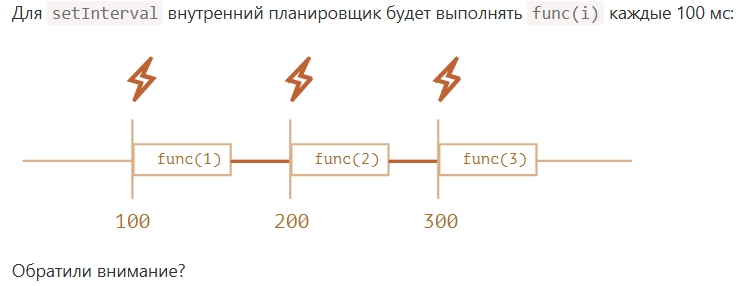

Отложенное выполнение кода осуществляется с помощью 2 методов:
let timerId = setTimeout(func|code, [delay], [arg1], [arg2], ...);
func идёт как func без (), а аргументы передаются отдельно.
delay в миллисекундах
Пример:
Код примера
function testSetTimeout(){
let num = setTimeout(function(){
document.getElementById('testInterval').innerHTML = "ТЕСТОВОЕ СООБЩЕНИЕ ПОСЛЕ 3 СЕКУНД НАЖАТИЯ КНОПКИ"
}, 3000)
}
Так же можно использовать строки, но делать это не рекомендуется:
setTimeout("alert('Привет')", 1000);
Лучше использовать или объявление ф-ции или стрелочную функцию:
setTimeout(() => alert('Привет'), 1000);
Ф-ция setTimeout возвращет id по которому её можно отменить, прмимер ф-ция:
function testId(){
let timerId = setTimeout(() => alert('Do nothing'), 4000 )
alert(`Возвращённый номер таймера: ${timerId}`);
clearTimeout(timerId);
}
Нода передаёт вместо числа объект с дополнительными свойствами:
Timeout {_idleTimeout: 4000, _idlePrev: TimersList, _idleNext: TimersList, _idleStart: 474, _onTimeout: ƒ, …}
testID.js:3
_destroyed = false
_idleNext = TimersList {_idleNext: Timeout, _idlePrev: Timeout, expiry: 4474, id: -9007199254740991, msecs: 4000, …}
_idlePrev = TimersList {_idleNext: Timeout, _idlePrev: Timeout, expiry: 4474, id: -9007199254740991, msecs: 4000, …}
_idleStart = 474
_idleTimeout = 4000
_onTimeout = () => alert('Do nothing')
_repeat = null
_timerArgs = undefined
Symbol(asyncId) = 5
Symbol(kHasPrimitive) = true
Symbol(refed) = true
Symbol(triggerId) = 1
[[Prototype]] = Object
Но по умолчанию возвращет тоже какое-то число.
let timerId = setInterval(func|code, [delay], [arg1], [arg2], ...);
Как видно синтаксис такой же, но выполнение ф-ции происходит через delay. Так же присуствует метод
clearInterval во возвращённому значению:
function testInterval(){
let intervalID = setInterval(()=>alert("Tick"), 200)
setTimeout(() => {clearInterval(intervalID); alert("Stop Interval")}, 6000)
}
Ещё разок обратить внимание на то, что в эти ф-ции надо передавать ф-ции, а не fucn(param)
Сама идея вложенного setTimeout:
let timerId = setTimeout(function tick() {
alert('tick');
timerId = setTimeout(tick, 2000); // (*)
}, 2000);
Из-за необходимости увеличивать или уменьшать задержку в каких-то случаях по результату выполнения программы:
let delay = 5000;
let timerId = setTimeout(function request() {
...отправить запрос...
if (ошибка запроса из-за перегрузки сервера) {
// увеличить интервал для следующего запроса
delay *= 2;
}
timerId = setTimeout(request, delay);
}, delay);
А так же потому что в ряде случаев необходим точный интервал между запусками функции, а с setInterval такое не
получается:

Для избегания этого и используют вложенный setTimeout
let i = 1;
setTimeout(function run() {
func(i);
setTimeout(run, 100);
}, 100);
Так же автор сообщает, что в целях освобождения памяти, лучше сразу очищать id полученный из функции интервала или таймаута.
function testNullDelay() {
let timerId = setTimeout(()=>alert("МИР"))
for (let index = 0; index < 100500; index++) {
console.log("test") //иммитация бурной деятельности
}
alert("Привет")
}
Рассматривая код, становится понятно, что в целом задержка нулевая, но вот запуск происходит после отработки
всего кода. То же самое происходит и в ноде.
Далее сообщается что по спецификации HTML5, что после пятого вызова минимальная задержка начинает составлять 4 mc и далее так и увеличивается в браузерах. С нодой все обстоит иначе.
Короче я автора не понял и сделал так будто отсчет идёт с нуля и до to и мне надо вывести секунды от from до to включительно
а автор хотел просто числа раз в секунду от from до to не с нулевой секунды.